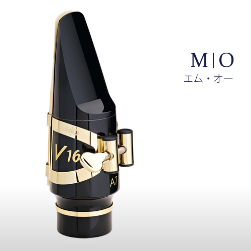
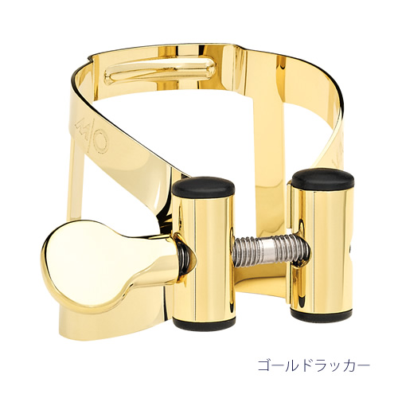
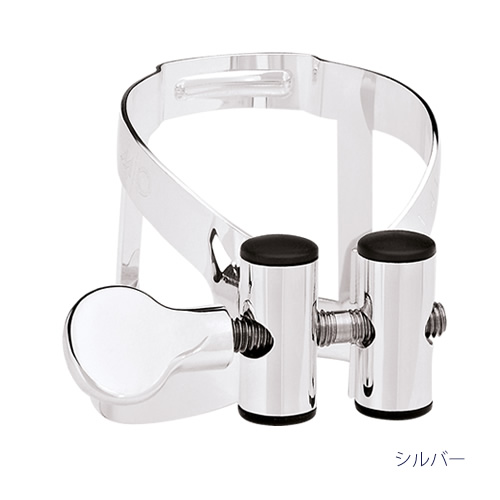
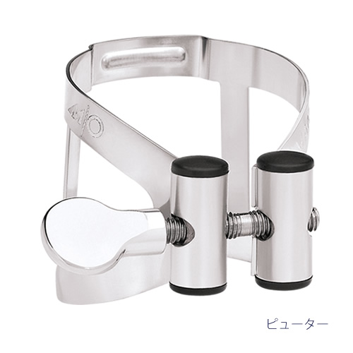
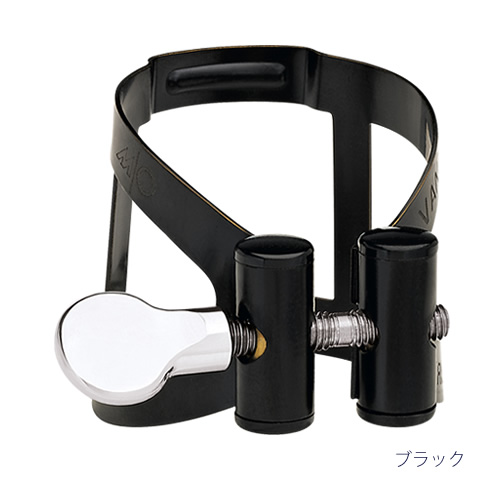
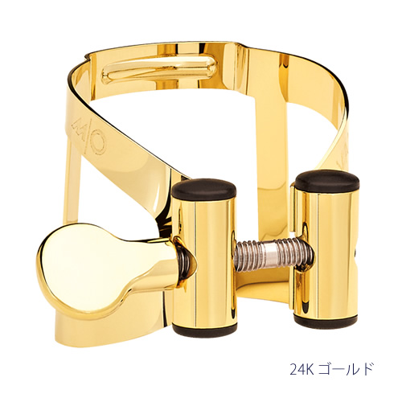
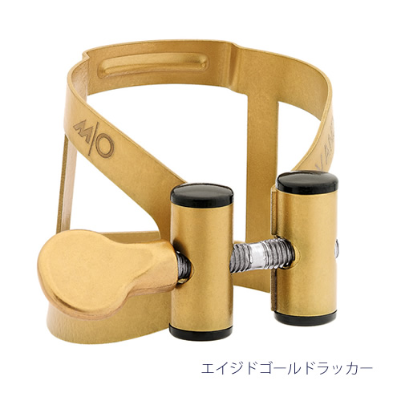
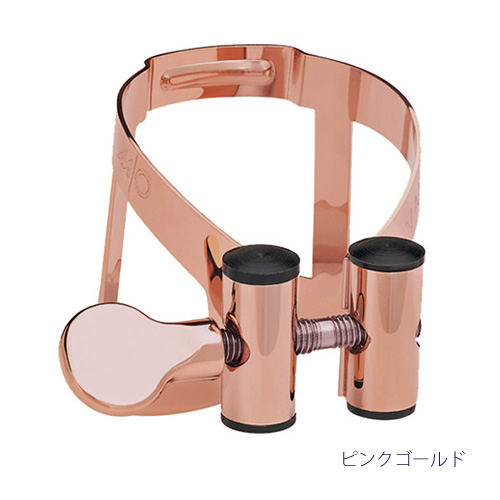
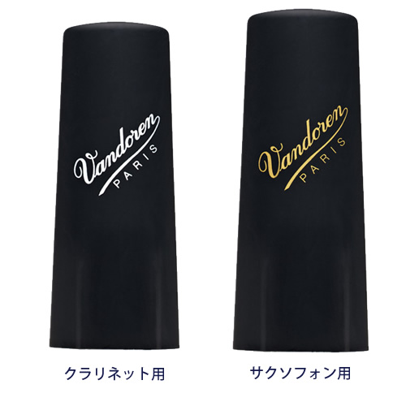
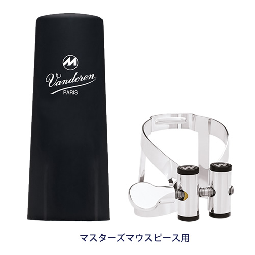

M｜O（エム・オー）リガチャー、リガチャーキャップ
バンドーレン・リガチャー、リガチャーキャップ

軽く、リードを過度に締め付けないバンドーレン・マスターリガチャーと、左右均一にリードを締めるバンドーレン・オプティマムを融合させたM|O リガチャー。
素早いレスポンスと切れ味の良いアーティキュレーションで、より豊かな表現を実現します。
素早いレスポンスと切れ味の良いアーティキュレーションで、より豊かな表現を実現します。
【M|O リガチャーの特徴】
- ①簡単な装着
- M|O リガチャーの輪郭はマウスピースに沿い、美しく、パーフェクトにフィットするようにデザインされているため、装着時に必要とされる調整時間などを大幅に削減できます。
- ②オプティマム・スクリュー
- この特別なオプティマムリガチャーのデザインはネジを数回まわすだけでリードを固定します。
- 普段はなんともない操作ですが、素早いリード交換が要求される状況でこの機能は大いに役立ちます。
- ③逆向きになった左右対称のサスペンション
- リードが正しく機能するためにはリード全体が均等に振動しなければなりません。
- M|O のユニークなダブルトラック・メカニズムは均一なサスペンションをリードの両サイドに与えます。
- リードの反対側に設置されたシングルスクリューは締め付けすぎることなくリードを固定します。
- ④コンタクト・ポイント
- M|O リガチャーは、リードをマウスピースのテーブルに、余計なプレッシャーなどを与えずに固定します。
- M|O リガチャーに作られた溝は、リードの振動に影響を与える側面からのプレッシャーや無駄なコンタクトを省きます。
- リードをホールドする、小さな２点のコンタクト・ポイントはリードの自然な振動を守ります。
- 素早いレスポンスと切れ味の良いアーティキュレーションはこの２つのコンタクト・ポイントによってもたらされます。
- ⑤軽量
- M|O は軽いブラスから作られています。このブラスはリードの動きを制限せず、自由な共鳴を可能にします。
- この素材により、リードに悩まされることなく、より洗練された自由な音楽表現が可能になります。







| クラリネット | リガチャー＆プラスチックキャップ | キャップ | ||||
|---|---|---|---|---|---|---|
| ブラック | ピューター | シルバー | 24K ゴールドプレート |
ピンクゴールド | ||
| B♭ | LC51BP | LC51PP | LC51SP | LC51GP | LC51PGP | C51P ∗ |
| E♭ | LC52BP | LC52PP | LC52SP | C52P ∗ | ||
| Alto | LC53BP | LC53PP | LC53SP | C53P ∗ | ||
| Bass | LC54BP | LC54PP | LC54SP | C54P ∗ | ||
| B♭ （マスターズマウスピース用） |
LC61BP | LC61PP | LC61SP | LC61GP | C61P ∗ | |
| サクソフォン | リガチャー＆プラスチックキャップ | キャップ | ||
|---|---|---|---|---|
| ゴールドラッカー | エイジド ゴールドラッカー |
24K ゴールドプレート |
||
| Soprano | LC56DP | LC56AP | LC56GP | C56P ∗ |
| Alto | LC57DP | LC57AP | LC57GP | C57P ∗ |
| Tenor (V16 メタルマウスピースを除く） |
LC58DP | LC58AP | LC58GP | C58P ∗ |
| Baritone | LC59DP | LC59AP | C59P ∗ | |
| Baritone (V16マウスピース用） |
LC590DP | LC590AP | C590P ∗ |

